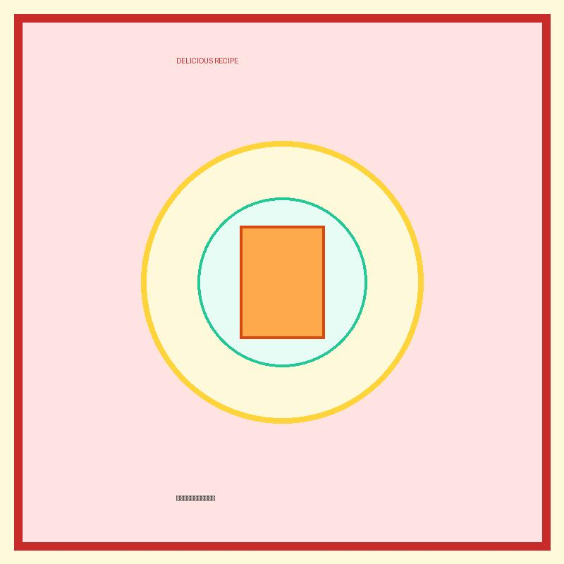

おかず
ポテトチップスオムレツ

卵液の中にポテトチップスをそのまま砕き入れてフライパンで丸く焼き上げたスペイン風オムレツ。ポテチの塩気とサクサク感が卵と絶妙にマッチ！
💡 こんな時・こんな人におすすめ！
お酒のおつまみが今すぐ欲しいとき、手軽な朝ごはんのおかずに！
📋 必要な材料（ポストイット風）
材料リスト 1
- たまご3個
- ポテトチップス（うすしお）1/2袋
- 牛乳大さじ1
材料リスト 2
- オリーブオイル大さじ1
- ケチャップお好みで
🍳 作り方ステップ
1
たまごをボウルに割り入れ、牛乳を加えてよく混ぜます。
2
ポテトチップスを手で荒く砕きながら卵液に入れ、軽く浸します。
3
フライパンにオリーブオイルを熱し、卵液を一気に流し込みます。
4
弱火で両面をじっくりと丸く焼き上げ、お好みでケチャップを添えます。